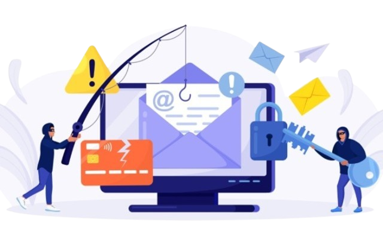
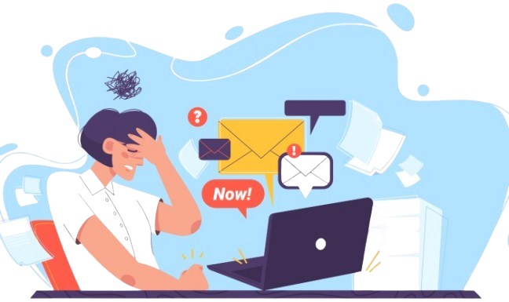

Phishing is one of the most common cybersecurity threats to businesses. Cybercriminals use deceptive emails, fake websites, fraudulent messages, and impersonation to trick employees into exposing sensitive information, sharing login credentials, or downloading malicious software. The consequences can include financial losses, data breaches, identity theft, and reputational damage. As businesses rely more on digital communication and cloud-based platforms, safeguarding confidential information is increasingly important.
Effective phishing prevention helps organizations spot suspicious activity, improve email security, and reduce the risk of unauthorized access. Employee awareness, security tools, authentication protocols, and regular monitoring work together to strengthen defenses against evolving threats. Explore this webpage to find additional details.
Phishing attacks exploit opportunities created by human error. One fraudulent email can put business accounts, customer information, financial records, and internal communications at risk.
Effective prevention helps organizations protect confidential information, block unauthorized account access, reduce losses from fraudulent transactions, maintain customer trust and reputation, meet data protection and regulatory requirements, and limit operational disruptions caused by cyberattacks.

Employees are often the first line of defense against phishing. Cybercriminals may pose as executives, vendors, financial institutions, or trusted service providers to make their messages seem legitimate. Without proper training, employees may click malicious links or share confidential information.
Regular cybersecurity awareness sessions can help employees spot warning signs, such as unfamiliar sender addresses, unexpected attachments, urgent payment requests, suspicious links, and unusual login notifications. Organizations can also use simulated phishing exercises to assess awareness and identify where more training is needed. Ongoing training reinforces the importance of verifying suspicious requests before acting.
Email authentication helps protect business domains from impersonation and spoofing. SPF, DKIM, and DMARC work together to verify email sources and guide how receiving servers handle messages that fail authentication.
Businesses should configure these protocols correctly and move gradually toward stronger DMARC policies, such as quarantine or reject. DMARCReport can help analyze DMARC reports, identify unauthorized sending sources, and monitor email authentication performance.
Traditional spam filters may miss sophisticated phishing emails designed to look like legitimate business messages. Advanced email security adds protection by checking links and attachments, verifying senders, and using threat intelligence to identify suspicious content before it reaches employee inboxes.
Pairing advanced filtering with properly configured email authentication creates multiple layers of protection.
Strong passwords alone may not stop attackers from stealing credentials. Phishing pages can capture legitimate usernames and passwords, which attackers may then use to try to access company systems.
Multi-factor authentication (MFA) requires an additional verification step before access is granted. Depending on the setup, that step may involve an authenticator app, a hardware security key, or another approved method.
Prioritize MFA for business email, administrative dashboards, cloud applications, financial platforms, and remote access systems. For stronger protection against credential theft, consider phishing-resistant methods such as FIDO2 security keys and passkeys.

Business email compromise scams often use fake invoices, fraudulent payment instructions, or messages impersonating senior executives. They may create a sense of urgency to pressure employees into acting without verification.
Set clear procedures for confirming sensitive requests. Before approving a payment, changing bank details, or sharing confidential documents, employees should contact the sender independently using a trusted phone number or communication channel. Do not use contact details provided in a suspicious email; attackers may control them.
Continuous monitoring can help organizations spot phishing attempts before they escalate into serious security incidents. Regularly review email authentication reports, login activity, message delivery patterns, and unusual account behavior. DMARC reporting tools can help security teams identify unauthorized senders, authentication failures, and possible domain spoofing. Set alerts for unusual login locations, repeated failed authentication attempts, unexpected forwarding rules, and suspicious permission changes. Early detection gives teams an opportunity to investigate and respond quickly.